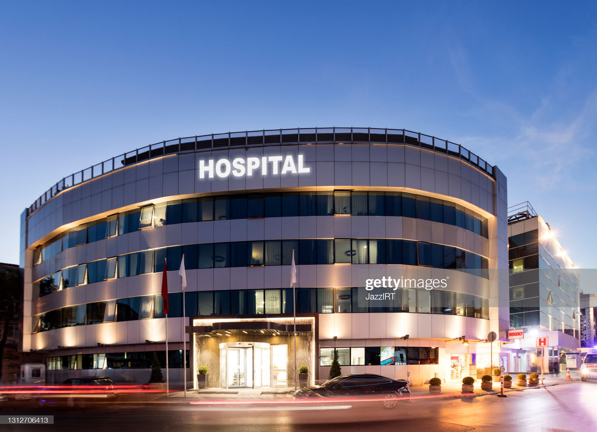
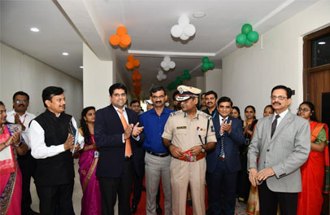
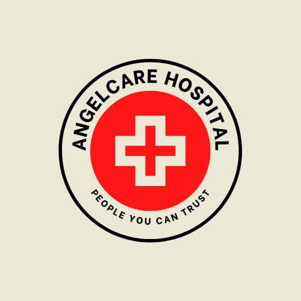

Hospital in Ahmedabad

Address
Hospital in Ahmedabad plot no. 1A,Gandhinagar, Ahmedabad,382428 Gujrat
About hospital
As a part of the Hospitals Group, Hospitals International Limited, Ahmedabad (AHIL) is one of the iconic and most preferred centres for medical care in the Gujarat region. The hospital offers advanced clinical services through 6 Centres of Excellence and other allied branches including all specialities and sub-specialities. The Hospital offers state of art technology and latest equipments to enhance the medical care to each patient visiting the Hospital. With a focus on Emergency care and Trauma medicine, the hospital offers 24×7 availability of dedicated doctors, trained staff, diagnostic services and is always ready to receive patients referred from all parts of the state. Hospitals, Ahmedabad has set a cornerstone for healthcare infrastructure in Gujarat with its world class benchmark for quality standards in healthcare service deliveries. The 289 bedded hospital offers state of art infrastructure with 87 Intensive Care beds, 2 Cath Labs, Modular Operation Theatres, 24×7 Blood Bank, dedicated Endoscopy Suite etc. The hospital offers a 24×7 Radiology Department with state of art 128 slice CT scan, MRI scan, Colour Doppler, advance Ultrasound Scan, X-ray, Mammography and Fluoroscopy. The Laboratory department at AHIL is not only accredited by NABL but also offers in-house investigation in Biochemistry, Haematology, Microbiology, Histopathology, Immunology, Immune Chemistry and Molecular diagnostics. The department is constantly adding newer technologies to bring the best in class diagnostics tools to the patients.
Contact
Hospital
Plot No.1A,
Bhat GIDC Estate Dist.
Airport Gandhinagar Road, Dist. Gandhinagar,
Ahmedabad – 382428
Gujarat
| Useful Telephone Numbers | |
|---|---|
| Emergency: | +91 7936463672 |
| Immigration: | +91 7936433672 |
| Health Check: | +91 7936463572 |
| Appoinment Desk: | +91 8936463672 |
| International wing: | +91 7936463672 |
| Main pharmacy: | +91 9936463672 |
| Duty adminstration: | +91 6936463672 |
| Insurence Desk: | +91 9364636720 |
Highlight & update
|  |  |  |